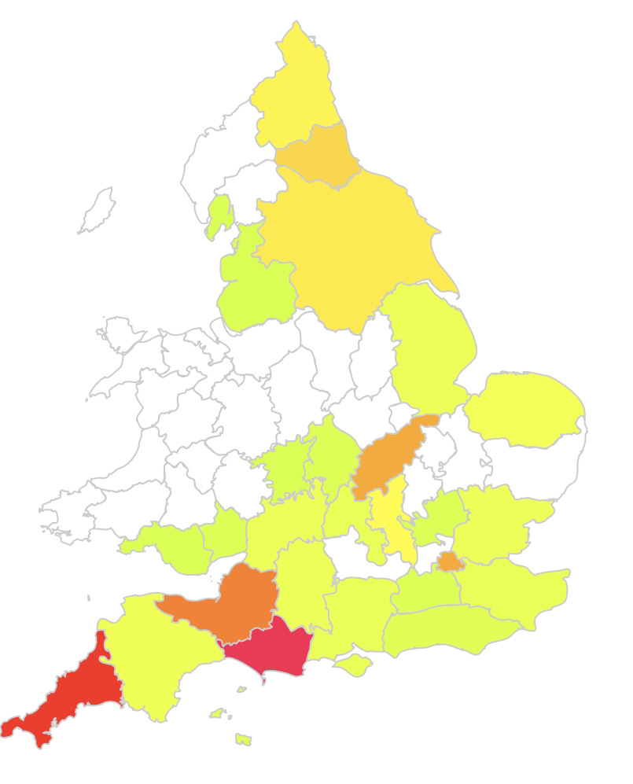

The Old family are currently under research. We are working to trace this branch further back and establish connections to other families in the tree.
If you have information about the Old family in the Midlands area, please do get in touch.
Return to Home